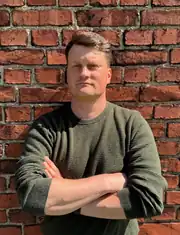
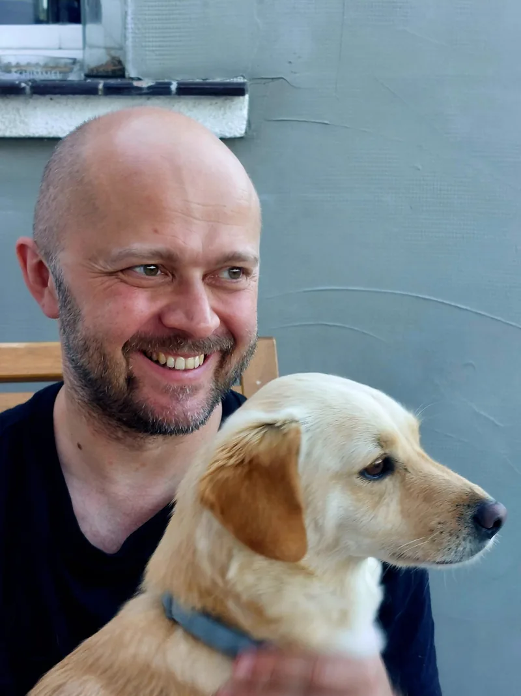

Edukujemy
Właścicieli historycznych budynków i osoby przygotowujące się do remontu.
Strona główna/O Fundacji
Nasza fundacja zajmuje się ochroną tradycyjnej architektury, krajobrazu kulturowego oraz wiedzy o historycznym budownictwie.
Łączymy ze sobą właścicieli starych domów, rzemieślników, ekspertów, organizacje społeczne, naukę i samorządy. Pomagamy podejmować mądre decyzje, promujemy odpowiedzialne podejście do remontów i tworzymy miejsce spotkań dla wszystkich, którym zależy na zachowaniu dziedzictwa dla przyszłych pokoleń.
Właściciele zabytkowych budynków często borykali się z tymi samymi problemami: brakiem sprawdzonych fachowców, rozproszoną wiedzą, stosowaniem niewłaściwych technologii czy uciążliwymi formalnościami. Do tego dochodził brak miejsca, gdzie można by uzyskać praktyczne wsparcie.
Ważną rolę odegrała założona przez Darka Borkowskiego grupa Ruinersi na Dolnym Śląsku. Grupy społecznościowe stały się przestrzenią wymiany doświadczeń, a internetowe rozmowy przeniosły się do remontowanych domów, na warsztaty, konferencje i Zloty Ruinersów.
Fundacja pozwoliła rozwinąć te działania, rozpocząć współpracę z instytucjami i reprezentować perspektywę właścicieli oraz społeczników w debacie publicznej.
Pomagamy ich właścicielom podejmować świadome decyzje, przekazujemy wiedzę o tradycyjnym budownictwie i łączymy ludzi oraz instytucje, które mogą wspólnie chronić dziedzictwo.
Właścicieli historycznych budynków i osoby przygotowujące się do remontu.
Warsztaty, konferencje, Zloty i spotkania tematyczne.
Właścicieli ze specjalistami, rzemieślnikami, organizacjami i instytucjami.
Perspektywę społecznej ochrony dziedzictwa w debacie publicznej.
Tworzymy publikacje i materiały edukacyjne, promujemy tradycyjne rzemiosło, upowszechniamy dobre praktyki remontowe, rozwijamy Ogólnopolski Klaster Społecznej Ochrony Dziedzictwa oraz inicjujemy działania regionalne, ogólnopolskie i transgraniczne.
Wierzymy, że skuteczna ochrona dziedzictwa wymaga rozmowy, wzajemnego zrozumienia i współpracy między ludźmi, którzy opiekują się historycznymi budynkami, a instytucjami odpowiedzialnymi za ich ochronę.
Tworzymy przestrzeń do dialogu z samorządami i konserwatorami zabytków. Wnosimy do tej rozmowy praktyczne doświadczenia właścicieli, rzemieślników i organizacji społecznych, a jednocześnie pomagamy lepiej rozumieć procedury, odpowiedzialność i cele ochrony konserwatorskiej.
Zależy nam nie na budowaniu podziałów, lecz na rozwiązaniach, które pozwalają zachować wartościowe budynki i krajobraz przy jednoczesnym uwzględnieniu realnych potrzeb ich właścicieli i lokalnych społeczności.
Fundacja nie zastępuje konserwatora, architekta, konstruktora ani wykonawcy. Pomagamy rozpoznać problem, uporządkować kolejność działań i znaleźć właściwych specjalistów.
Zachęcamy do przestrzegania procedur i korzystania z fachowej pomocy wszędzie tam, gdzie wymaga tego bezpieczeństwo, prawo lub ochrona konserwatorska.
Możemy pomóc uporządkować pierwsze kroki i wskazać, jakiego rodzaju specjalisty szukać. Nie zastępujemy projektanta, konstruktora ani konserwatora.
Napisz, czym się zajmujesz i gdzie działasz. Szukamy prowadzących warsztaty, konsultantów i współpracowników projektów.
Rozmawiamy o projektach edukacyjnych, ochronie historycznej zabudowy, partnerstwach i współpracy systemowej.
Dobierzemy rozmówcę i przekażemy dostępne materiały prasowe.

Nagroda dotyczy działalności środowiska Ruinersów na rzecz ochrony dziedzictwa i popularyzacji wiedzy o tradycyjnym budownictwie.
Skład publikujemy zgodnie z aktualnym KRS; zmiany organizacyjne pokazujemy po ich formalnym zarejestrowaniu.
Prezes Zarządu
Założyciel Fundacji i jej Prezes, spiritus movens Ruinersów. Zbudował społeczność Ruinersi na Dolnym Śląsku. Rozwija współpracę z właścicielami zabytków, rzemieślnikami, instytucjami i samorządami.

Członek Zarządu
Odpowiada za komunikację i rozwój organizacyjny Fundacji. Specjalista IT, zajmujący się zarządzaniem zespołami projektowymi i dokumentacją techniczną. Pasjonat dziedzictwa Dolnego Śląska. Od 2024 roku odnawia poniemieckie siedlisko w Złotym Potoku.

Członek Zarządu
Architekt z międzynarodowym doświadczeniem, prowadzący autorską pracownię. Specjalizuje się w pracy z dziedzictwem, krajobrazem i materiałami. Sędzia konkursowy SARP, członek stowarzyszenia WSPÓŁ.
Przewodniczący Rady
Radca prawny specjalizujący się w prawie umów i inwestycji budowlanych. Ma wieloletnie doświadczenie w obsłudze procesów inwestycyjnych, w tym robót dotyczących obiektów zabytkowych. Od lat wspiera prawnie organizacje pozarządowe.
Członkini Rady
Od początku współtworzy Fundację Ruinersi na Dolnym Śląsku jako członkini Rady Fundacji. Zawodowo zajmuje się koordynacją spółek, a prywatnie kibicuje wszystkim starym domom, które dostają drugą szansę. Szczególnie bliskie są jej zabytkowe domy, architektura przysłupowa i historia Dolnego Śląska. Wierzy, że ratowanie dziedzictwa to inwestycja, której wartość rośnie z każdym kolejnym pokoleniem.
Członkini Rady
Specjalistka w zakresie ochrony i konserwacji dziedzictwa, wykładowczyni i kierowniczka Działu Muzealno-Edukacyjnego w Zamku Książ. Autorka książki Zabytkowy budynek. Poradnik właściciela i użytkownika oraz współautorka serii Stary dom w remoncie. Uczestniczyła w programach i szkoleniach Historic England, SPAB, NID oraz Europa Nostra.
Fundację regularnie wspierają osoby, które poświęcają swój czas i kompetencje przy wydarzeniach, projektach, dokumentacji i działaniach organizacyjnych.
Wolontariuszka
Muzealnik z kilkunastoletnim doświadczeniem w realizacji projektów wystawienniczych, dokumentalistycznych, edukacyjnych i popularyzatorskich. Od 2020 r. związana z Fundacją Pałac Bojadła jako koordynator projektu Rewitalizacja Pałacu Bojadła z adaptacją na cele kulturalne.
Wolontariusz